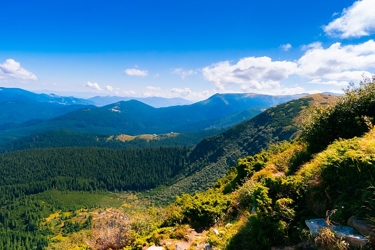
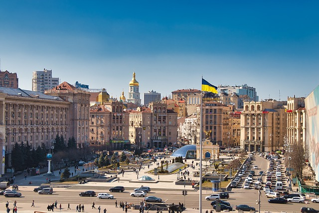
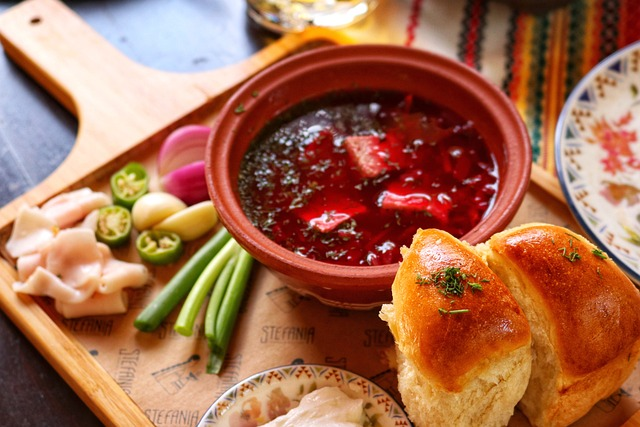

Природні багатства
Україна - справжній природний скарб. Країна може похизуватися різноманітними ландшафтами, від високих гірських хребтів до родючих степів. Карпати, розташовані на заході країни, є популярним туристичним напрямком завдяки своїм мальовничим пейзажам, гірськолижним курортам та багатій флорі і фауні. Полісся, на півночі України, вражає своїми густими лісами, чистими озерами та річками. Цей регіон є домом для багатьох рідкісних видів тварин і рослин.
Степи, що займають значну частину території України, є символом родючості та безмежних просторів. Чорноземні ґрунти степів дозволяють вирощувати різноманітні сільськогосподарські культури. Чорне море, що омиває південні береги України, є популярним місцем відпочинку для мільйонів туристів. Тут можна насолоджуватися теплим морем, піщаними пляжами та різноманітними водними видами спорту.
- Карпати: Найвищі гори в Україні, багаті на природні ресурси та історичні пам'ятки. Карпати є домом для багатьох ендемічних видів рослин і тварин.
- Гірськолижні курорти: Буковель, Драгобрат та інші пропонують відмінні умови для зимового відпочинку.
- Карпатські національні парки: зберігають унікальну природу гірського регіону.
- Полісся: Лісостепова зона з багатим біорізноманіттям. Полісся славиться своїми лісами, озерами, болотами та річками.
- Шацькі озера: одне з найбільших озерних груп в Європі.
- Поліський заповідник: охороняє унікальні природні комплекси.
- Степи: Безмежні простори з родючими ґрунтами. Степи є основним сільськогосподарським регіоном України.
- Чорнозем: один з найродючіших ґрунтів у світі.
- Степові заповідники: зберігають унікальні степові екосистеми.
- Чорне море: Тепле море з піщаними пляжами. Чорне море є популярним місцем відпочинку для туристів.
- Одеса: найбільше морське портове місто України.
- Чорноморське узбережжя: відоме своїми курортами та лікувальними грязями.
Культурна спадщина
Українська культура - це багатий кошик традицій, звичаїв, мистецтв та історії. Вона формувалася протягом століть під впливом різних культур, але при цьому зберегла свою унікальність. Українська мова, одна з наймелодійніших у світі, є невід'ємною частиною нашої культурної спадщини. Фольклор, який включає в себе пісні, танці, казки та легенди, передається з покоління в покоління і відображає душу українського народу.
Українське мистецтво відоме своїм реалізмом, ліризмом та глибоким розумінням людської душі. Видатні українські митці, такі як Тарас Шевченко, Микола Гоголь, Катерина Білокур, зробили вагомий внесок у світову культуру. Українська архітектура вражає своєю різноманітністю стилів, від давніх храмів Київської Русі до модерних будівель.
- Українська мова: Мелодійна і багата мова, яка є символом української нації.
- Літературна мова: використовується в офіційних документах, літературі та науці.
- Діалекти: різноманітні говірки, які відрізняються фонетикою, лексикою та граматикою.
- Український фольклор: Скарбниця народної творчості, яка відображає побут, звичаї та вірування українців.
- Пісні: ліричні, історичні, жартівливі, обрядові.
- Танці: гопак, коломийки, метелиця.
- Українське мистецтво: Живопис, скульптура, графіка, декоративно-ужиткове мистецтво.
- Тарас Шевченко: національний поет України.
- Катерина Білокур: народна художниця.
Українська кухня
Українська кухня - це справжнє свято для гурманів. Вона відрізняється своєю простотою, ситністю і різноманітністю смаків. Основними продуктами української кухні є борошно, м'ясо, овочі, молочні продукти та спеції. Традиційні українські страви готуються з натуральних продуктів за особливими рецептами, які передаються з покоління в покоління.
Борщ, вареники, галушки, деруни - це лише деякі з найвідоміших українських страв. Кожна область України має свої особливості в кулінарії, що робить українську кухню ще більш різноманітною. Не менш важливу роль в українській кухні відіграють напої, такі як компоти, узвари, медові напої.
- Борщ: Перша страва, яка є візитною карткою української кухні.
- Червоний борщ: готується з буряка.
- Зелений борщ: готується з кропиви або щавлю.
- Вареники: Традиційні українські страви з тіста з різноманітними начинками.
- Вишневі вареники: солодкі вареники з вишневою начинкою.
- Картопляні вареники: ситні вареники з картопляною начинкою.
- Сало: Національний продукт української кухні, який використовується як закуска, додається до багатьох страв.
- Солоне сало: класичний варіант.
- Копчене сало: з більш насиченим смаком.